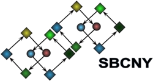

| Developed | in | the Ma'ayan Lab |
| by | Edward Chen | |
| Christopher Tan | ||
| Yan Kou | ||
| Neil Clark | ||
| Avi Ma'ayan |
|  |
After submitting a list, there's a share button on the top right corner of the results page. Clicking it will pop up a box that provides you a 30-day temporary link to share your results. It is encouraged to provide a brief description for your list on the starting page so that your collaborators know what the data is from. You can permanently save your results in List2Networks. On the lists page, there is the option to use Enrichr as an action.
Part of the goal of this project is to improve the visualization of results using SVG powered by the D3 JavaScript library. Any of the IE versions prior to IE 9 do not render SVG properly. In addition, the stock browser in Android 2.3.7 (Gingerbread) or below does not support SVG either; however, Firefox for Android and Opera for Android are viable alternatives. You can see a complete table of SVG compatibility across various browsers here.
You can call Enrichr on your site with some simple JavaScript:
function enrich(options) {
var defaultOptions = {
description: "",
popup: false
};
if (typeof options.description == 'undefined')
options.description = defaultOptions.description;
if (typeof options.popup == 'undefined')
options.popup = defaultOptions.popup;
if (typeof options.list == 'undefined')
alert('No genes defined.');
var form = document.createElement('form');
form.setAttribute('method', 'post');
form.setAttribute('action', 'http://amp.pharm.mssm.edu/Enrichr/enrich');
if (options.popup)
form.setAttribute('target', '_blank');
form.setAttribute('enctype', 'multipart/form-data');
var listField = document.createElement('input');
listField.setAttribute('type', 'hidden');
listField.setAttribute('name', 'list');
listField.setAttribute('value', options.genes);
form.appendChild(listField);
var descField = document.createElement('input');
descField.setAttribute('type', 'hidden');
descField.setAttribute('name', 'description');
descField.setAttribute('value', options.description);
form.appendChild(descField);
document.body.appendChild(form);
form.submit();
document.body.removeChild(form);
}
To use it, simply call enrich({list: genes}) in your JavaScript and pass in genes as a list of Entrez Gene symbols separated by newlines. You can include a description for the list by using enrich({list: genes, description: descString}). To have the results pop up in a new window, use enrich({list: genes, popup: true}).